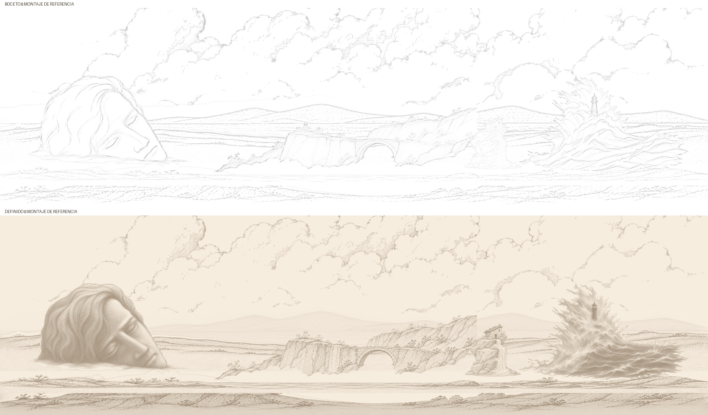
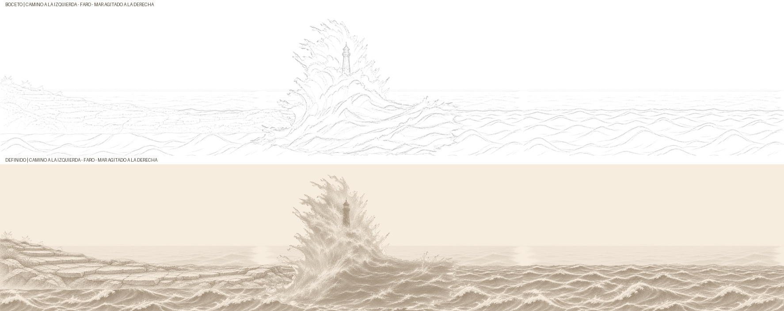

Izquierda: boceto con papel blanco opaco. Derecha: definido en sepia claro. Cada pareja conserva tamaño, origen y máscara alfa.
Lista completa · Verificación técnica · Notas para Claude
PNG boceto · PNG definido
Boceto · Definido

